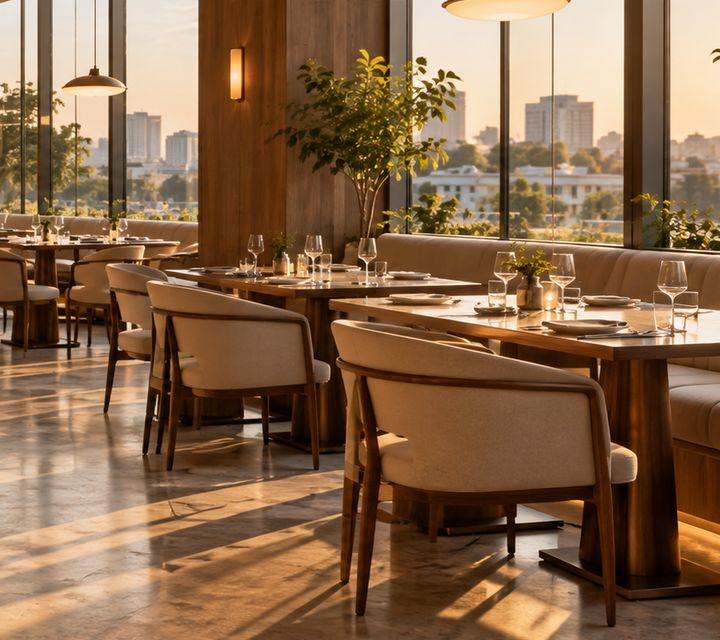

매장 이미지 · 시연용

이탈리안 다이닝성수 · 예약 가능
바로키친 성수점
편안한 분위기에서 즐기는 작은 식탁의 여유
✦ 4.8 예시 평점서울 성수동다이닝 · 파스타
ABOUT US
맛있는 순간을 위한 공간
햇살이 드는 창가 자리부터 조용한 테이블까지. 원하는 자리에서 편안한 시간을 보내세요. 방문 날짜와 인원을 정한 뒤 실제 배치도에서 테이블을 직접 고를 수 있습니다.
◌ 창가 테이블◌ 단체석◌ 조용한 좌석◌ 실시간 자리 확인
OPEN HOURS
매장 이용 안내
영업시간11:30 – 22:00
브레이크 타임15:00 – 17:00
예약30분 단위 예약 · 좌석 직접 선택
LOCATION
오시는 길
서울 성동구 성수동 · 예시 위치
위치 안내 · 시연용 지도
실제 매장 주소가 제공되지 않아 지도는 위치 안내 시안입니다. 배포 시 실제 주소와 지도 API를 연결해 주세요.